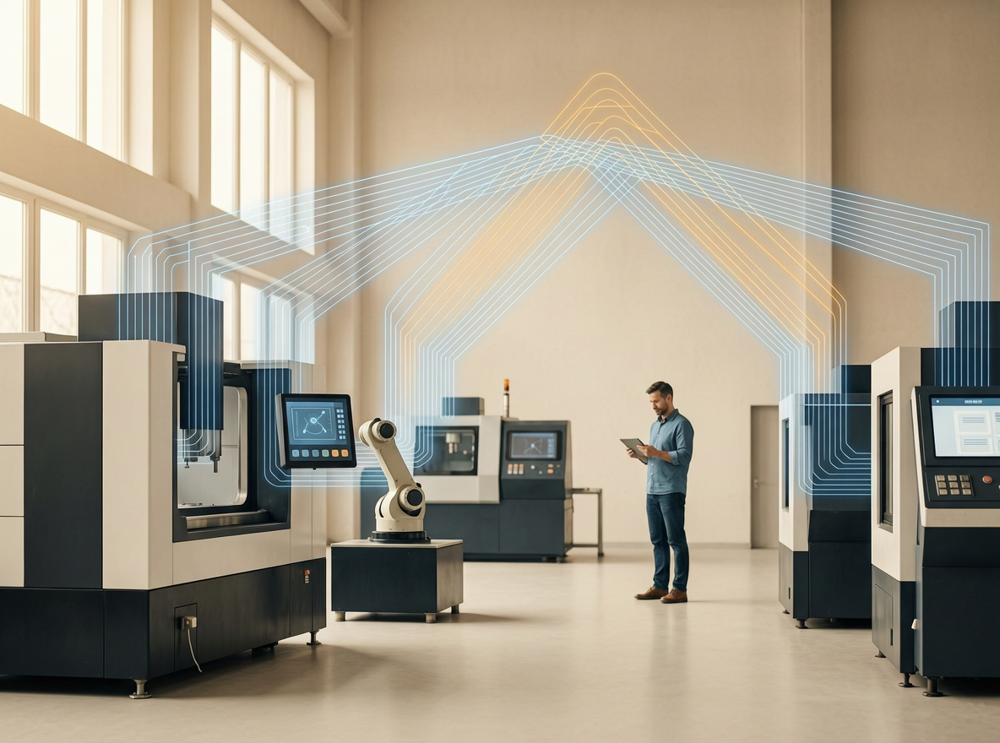
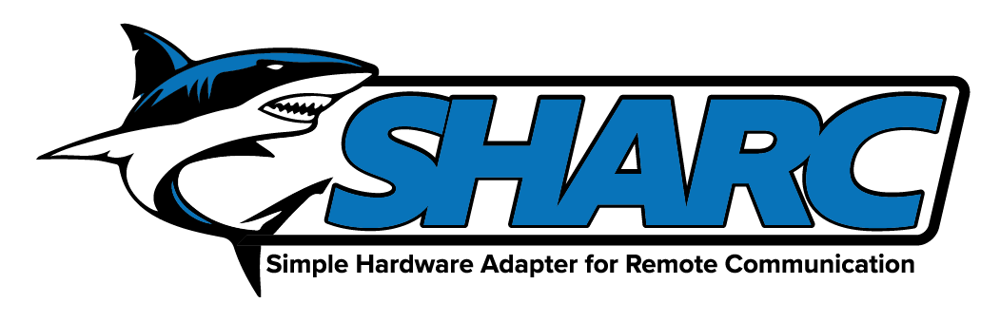
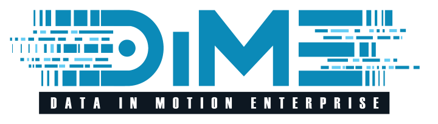
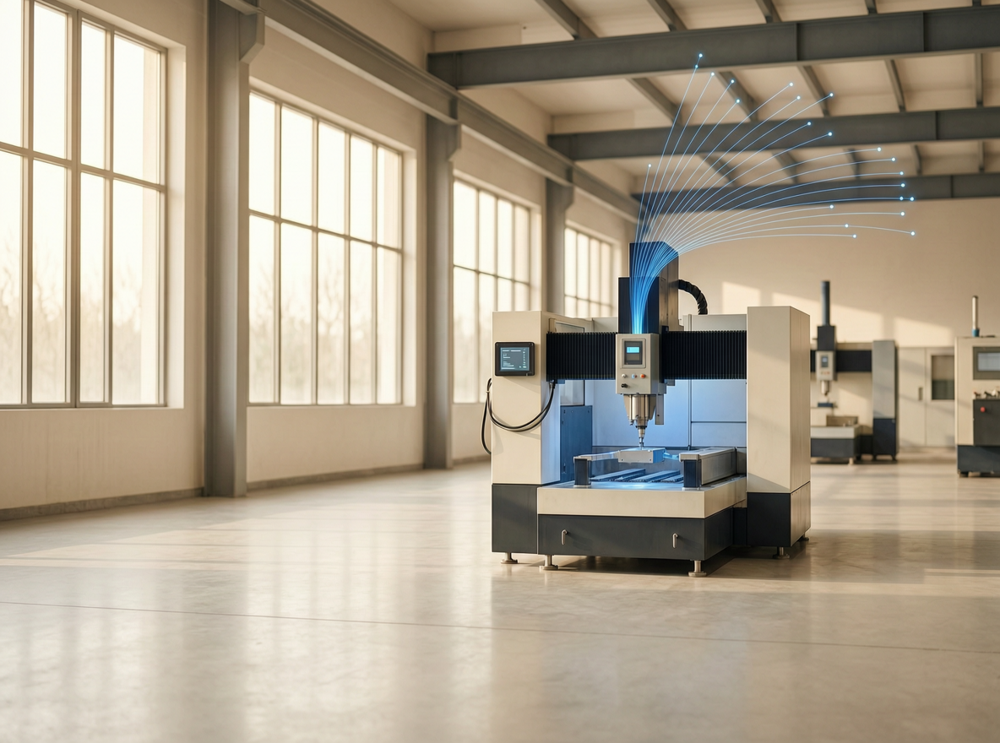
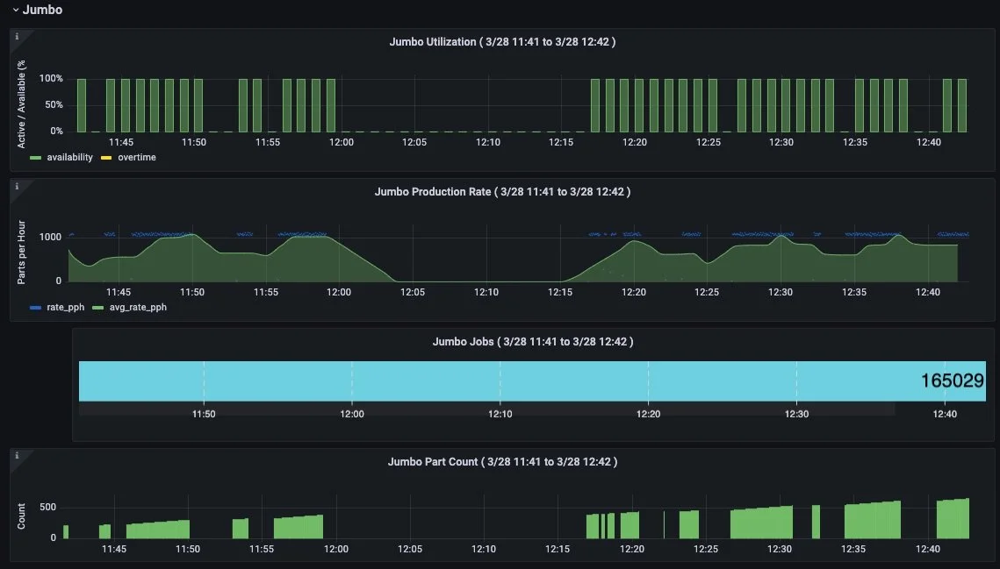
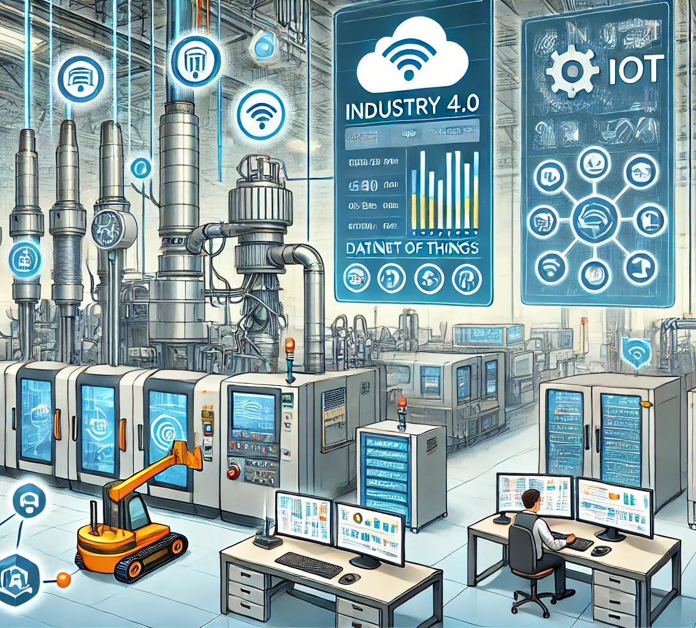
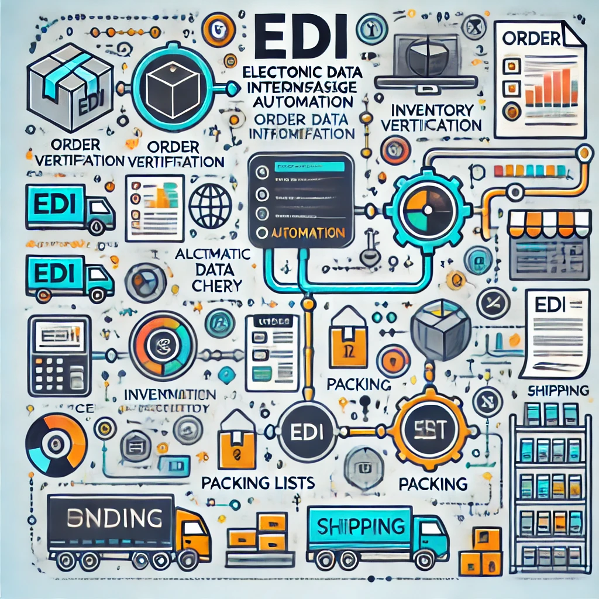

“We’re growing faster than we can hire.”
Demand is through the roof, but skilled labor is scarce—and onboarding new operators takes months.
Industrial IoT & Systems Engineering
Hitting manufacturing growing pains? The fix isn’t scrambling to hire more people—it’s building better systems. Mr. IIoT is an industrial IoT and systems engineering firm that connects your legacy machinery and automates the operational busywork. We give your current team the tools to produce more without the overhead.

Sound familiar?
We hear the same frustrations from scaling manufacturers every day:
Demand is through the roof, but skilled labor is scarce—and onboarding new operators takes months.
Re-keying orders, logs, and compliance reports eats up unbillable time and invites costly mistakes.
Operators shouldn’t spend their day manually bridging the gaps between your ERP, machines, spreadsheets, and emails.
Without real-time floor visibility, utilization, downtime, and true job costs are just a guessing game until month-end.
Growth should bring operational leverage, not a wave of manual EDI tasks and labeling bottlenecks.
Maintenance remains entirely reactive. By the time a bottleneck shows up on a weekly report, the line has already been down for days.
The outcome
We engineer the infrastructure that takes the busywork off your people, so you can run leaner as you scale.
Kill repetitive data entry and redundant paperwork, and free your staff to focus on real production.
Take on more orders, deploy more machines, and win larger customers with the exact headcount you have right now.
Get instant visibility into uptime, utilization, and costs, so you decide on floor facts instead of gut feel.
Integrate your physical machinery with your core business software so data flows automatically.
From floor to frontier
01 · Connectivity
Don’t pay a five-figure OEM fee just to get a single legacy machine online—especially when half your assets speak languages nothing else understands.
Whether you need to introduce entirely new measurements or tap a machine you’ve owned for decades, we extract the signal smoothly.

Connect any analog or digital industrial sensor to your network for a fraction of traditional OEM costs. Instantly track throughput, pressure, temperature, current, or vibration. Floor proof: one customer replaced an OEM connectivity quote with two SHARC units at one-tenth the original estimate.

Data In Motion Enterprise is a high-performance edge connector that speaks your equipment’s native language. It turns PLCs, robots, CNCs, and databases into a single, unified data stream with zero custom coding.
A plethora of protocols — 50+ and counting, including:
02 · Data Collection
Raw machine data is useless if it’s locked in a proprietary black box or trapped on the factory floor.
We stream edge readings using open, modern standards—JSON over MQTT—so you fully own your data with zero vendor lock-in. Alert on abnormal readings, record equipment events, and build a faithful record of how your machines actually run.

03 · Integration
From there, we clean, shape, and route that stream directly into the applications your teams use every day—whether a system needs data pushed to it or wants to ask for it.
A low-code/no-code routing environment that normalizes and pushes the unified stream to historians, brokers, databases, and analytics tools. Mismatched assets finally feed one coherent operational picture.
i3X (Industrial Information Interoperability Exchange) turns legacy databases, spreadsheets, and machinery into standardized, queryable REST APIs with built-in semantic models.
04 · Analytics
Stop reacting to downtime hours after a shift ends.
With your operational data flowing cleanly, custom dashboards and predictive analytics flag anomalies before your lines grind to a halt. You get the insight to improve quality and maximize OEE—on an open platform that stays completely yours.

05 · Support
When a machine goes down at 2 AM, the fix shouldn’t require digging through a dusty 400-page manual or an old email chain.
Tracebook turns your equipment manuals, schematics, and resolved tickets into an instant, searchable knowledge base—AI tech support for machine OEMs, white-labeled under your brand.
The product matrix
Universal IoT sensor adapter. Gets any sensor onto any network.
Connectivity · IntegrationUniversal translator. Ingests 50+ protocols; normalizes and routes data anywhere.
IntegrationTurns disparate legacy data sources into standardized, queryable REST APIs.
Smart SupportAI technical support for OEMs, drawing verified answers straight from your documentation.
Case studies

Ox Box unlocked real-time uptime and productivity metrics with SHARC sensors and Grafana dashboards.
A nationwide commercial bakery met strict FDA traceability requirements with a custom SSCC system and SHARC.

Tempco fully automated their Grainger EDI pipeline, eliminating manual order-entry bottlenecks.
FAQ
Mr. IIoT is an industrial IoT and systems engineering firm. We connect your machines, integrate your systems, and automate the operational busywork — so your existing team can produce more without adding headcount.
No. We work with the equipment and systems you already own — connecting legacy machines, tapping existing PLCs, and integrating your current ERP, historian, and tools.
Four: SHARC (universal IoT sensor adapter), DIME (universal protocol translator and DataOps), i3X (turns any data source into queryable REST APIs), and Tracebook (AI tech support for machine OEMs).
You own your data. Telemetry streams in open standards — JSON over MQTT — and the platform is open, with no proprietary lock-in at the source.
Often days to weeks, not quarters. DIME can connect machines in hours, and a monitoring dashboard can be standing up in days rather than months.
Manufacturers and machine OEMs across aerospace, packaging, food & baking, fluid systems, CNC and contract machining, and capital-equipment building.
Tell us where the bottlenecks are and we’ll map the shortest path to better systems. Start a conversation or email chris@mriiot.com.
We build the connectivity, integration, and automation architectures that help manufacturers grow efficiently. Drop us a line and we’ll map your shortest path to better systems.